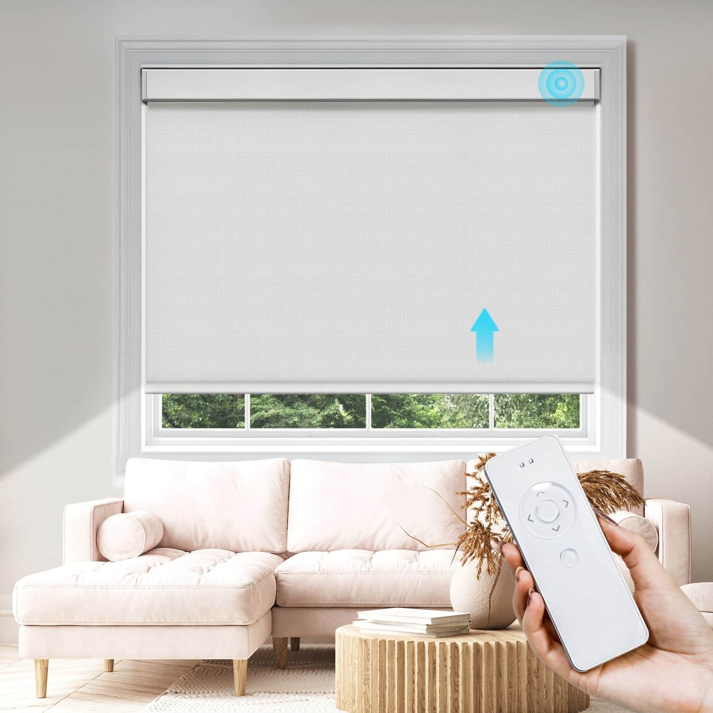
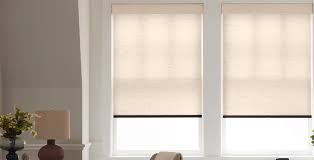

Problem Definition
UC San Diego students living and studying in dorms, bedrooms, and shared spaces frequently have to use manually operated chain loop blinds, which are left mostly in one position throughout the day. This results in poor lighting conditions, including monitor glare, excessive heat from sunlight, or rooms that are too dark and rely on artificial lighting.
Problem Motivation
We decided to work with this problem because we personally have experienced times when we forget to close or open the blinds, and the glare or lack of sunlight affects our productivity, sleep patterns, and overall quality of life.
Existing Solutions

Smart Blinds
- Strengths:
- Simple and basic; Intuitive to use
- Can be controlled remotely
- Weaknesses:
- Requires setup and configuration
- Isn't autonomous; requires manual operation

Shades
- Strengths:
- Smooth, even light filtering
- Can reduce glare
- Weaknesses:
- Poor granularity in light control
- Fabrics degrade faster